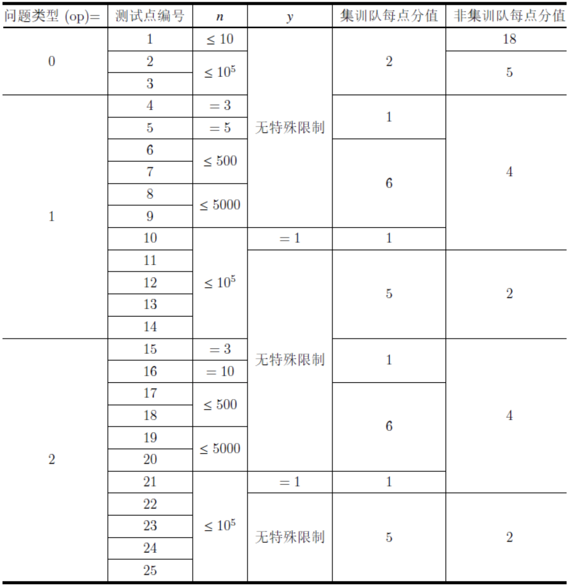

Comet OJ
Comet OJ第一行三个用空格隔开的整数 $n,y,op$。 如果 $op=0$，则接下来 $2×(n−1)$ 行，前 $(n−1)$ 行每描述一条蓝色绳子，接下来 $(n−1)$ 行每行描述一条红色绳子。
如果 $op=1$，则接下来 $(n−1)$ 行，每行描述一条蓝色绳子。
如果 $op=2$，则接下来没有输入。
描述绳子的各行将包含两个用空格隔开的整数，分别表示被这条绳子连接的两只鼠的编号。鼠的编号是从 $1$ 开始的。
白兔喜欢树。
白云喜欢数数。
有 $n$ 只鼠，白兔用 $n−1$ 根蓝色绳子把它们连成了一棵树，每根蓝色绳子连着两只鼠，白云用 $n−1$ 根红色绳子把它们连成了一棵树，每根红色绳子连接着两只鼠。
白云要给予每只鼠一个数。这个数可以是 $[1,y]$ 中的任意一个整数。
白兔给了白云一个要求：对于两只鼠 $p,q$，若存在一条连接这两只鼠的路径同时属于这两棵树，则 $p$ 和 $q$ 必须被给予相同的整数。存在一条路径同时属于这两棵树指的是：存在一个序列 $(a_1=p,a_2,⋯,a_m=q)$，使得：对于所有 $i \in [1,m−1]$，都有 $a_i$ 和 $a_{i+1}$ 既有一根红色绳子直接相连也有一根蓝色绳子直接相连。
白云想知道，她有多少种给予数的方案呢？
鼠在不停地挣扎，想要摆脱绳子的束缚。白云还没有思考出来，鼠便把红色绳子都咬断了。
白兔有些气恼，但是他还是想要知道答案。他便问白云：对于所有红色绳子的连接方案，答案的总和（即求所有红色绳子连接方案的给予数方案之和）是多少？
鼠在不停地挣扎，想要摆脱绳子的束缚。白云还没有思考出来，鼠便把蓝色绳子也咬断了。
白兔有些气恼，但是他还是想要知道答案。他便问白云：对于所有红色和蓝色绳子的连接方案，答案的总和（即求所有红色和蓝色绳子连接方案的给予数方案之和）是多少？两个方案不同当且仅当存在至少一对鼠，在两种方案中，这两只鼠之间直接连接的绳子不同（两只鼠之间连接绳子的可能性有 4 种：没有绳子直接连接，只有红色绳子直接连接，只有蓝色绳子直接连接，两种颜色的绳子均直接连接）。
白云哭了。
本题包含三个问题：
提示：$n$ 个节点的树一共有 $n^{n−2}$ 种。
在不同的测试点中，你将可能需要回答不同的问题。我们将用 $op$ 来指代你需要回答的问题编号（对应上述 0、 1、 2）。
由于答案可能很大，因此你只需要输出答案对 $998,244,353$ 取模的结果即可。
第一行三个用空格隔开的整数 $n,y,op$。 如果 $op=0$，则接下来 $2×(n−1)$ 行，前 $(n−1)$ 行每描述一条蓝色绳子，接下来 $(n−1)$ 行每行描述一条红色绳子。
如果 $op=1$，则接下来 $(n−1)$ 行，每行描述一条蓝色绳子。
如果 $op=2$，则接下来没有输入。
描述绳子的各行将包含两个用空格隔开的整数，分别表示被这条绳子连接的两只鼠的编号。鼠的编号是从 $1$ 开始的。
输出一个整数，表示答案对 $998,244,353$ 取模的结果。
3 2 0
1 2
2 3
1 2
2 323 2 1
1 2
2 323 2 230【样例1说明】
两棵树相同，所以任意两个点都必须被给予相同的数，方案数为 $2$。
【样例2说明】
红树共有三种可能的情况：
综上，问题 1 的答案为 $2+4+4=10$。
【样例3说明】
蓝树一共有三种可能的情况。不难发现，对于蓝树的每一种情况，求得的问题 1 的答案都是 $10$。所以答案为 $10×3=30$。
【数据规模】

所有测试点均满足 $3 \times 10^5, 1 \le y \le 998244353, op \in \{0, 1, 2\}$